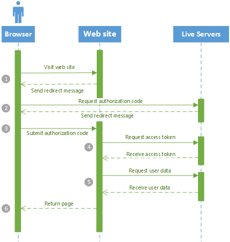

Windows Azure includes two services, Windows Azure Active Directory (WAAD) and Access Control Services (ACS), that you can use as part of a claims-based authentication and authorization infrastructure. This sample shows how you can quickly and easily configure these services and an ASP.NET MVC web application to enable users to authenticate using a variety of identity providers and use role-based authorization in the web application.
This page provides an overview of some of the key features of the application. You can download the sample from GitHub and then follow the configuration and deployment steps using the pages in this site.
Claims
This example uses claims-based authentication and authorization. You can think of a claim as being a token issued by a trustworthy source that tells you something about the person (or system) who is submitting the claim. For example, your ASP.NET website might expect a user to submit claims specifying the username, email address, and organization. For the website to be able to trust these claims there must be a complex system in place that signs and encrypts the claims. WAAD and ACS provide most of this infrastructure for you and Visual Studio makes it easy to integrate a standard web application into this infrastructure with very little code. This claims-based approach is also based on standards which makes it very easy to integrate with other systems and identity providers.
The example application
The following diagram illustrates the relationships between the key elements of the system.
The diagram shows the direction of the trust relationships: the application trusts ACS, and ACS trusts WAAD. It also shows the sequence of activities associated with a user signing in to the application. In this example:
- The user authenticates with WAAD which issues a number of claims such as the name and email address of the authenticated user.
- The claims issued by WAAD are submitted to ACS which applies some transformation logic and issues an additional claim with the user's role.
- All of the claims issued by WAAD and ACS are submitted to the web application which uses those claims to customize the UI (showing the name of the logged on user) and to control access to different parts of the site (based on whether the user is in the Managers role or the Users role).
There are some general points to note about this process.
- The user is largely unaware of WAAD and ACS. The user is simply presented with a sign-in page to enter their username and password when he or she tries to access the web application. A complex set of redirections takes place behind the scenes to ensure that the user authenticates and ACS gets to perform its role of transforming the set of claims issued by WAAD.
- It would be possible to customize WAAD to issue the role claim. However, we also want to extend the example to enable users to authenticate with a Microsoft ID or Google ID as alternatives to a WAAD ID. Therefore, using ACS to assign the role claim provides a single location for managing roles used in the web application.
Using the Live APIs
You can easily configure the sample to enable users to authenticate using either a Microsoft Account (Live Id) or a Google Account, for more information see Enable additional Identity Providers. If a user authenticates using a Microsoft Account, then the Live servers only issue two claims (Name Identifier and Identity Provider) to ACS for ACS to pass on to your application. This means that you don't have access to the user's name in the web application to customize the UI. The sample illustrates an approach that you can take to query the Live servers for additional user information. The approach taken is using server side code rather than client side JavaScript: a JavaScript solution would probably be easier to implement, but would make it dificult to access the information on the server, where it might be useful for puposes other than simply displaying a welcome message to the user.
The following sequence diagram shows how the web application obtains user data from the Live servers.

The numbers in the diagram are explained below:
- After the user has authenticated using Microsoft credentials through ACS and the Live servers, when the user browses to the web application, the web application checks for a Live authorization code. If there is no authorization code in the query string, the web application redirects the browser to the https://login.live.com/oauth20_authorize.srf endpoint, including the current page address as the callback location, and the ClientId from your application's Live account.
- The request for an authorization code also includes the cookies that were created when the user first authenticated with Live. Therefore, the user does not need to re-authenticate and the Live servers return a redirect back to your application that includes the authorization code.
- The browser requests the home page in the web application for a second time, this time including the authorization code as a parameter in the query string.
- The web application uses the authorization code to request an access token from the https://login.live.com/oauth20_token.srf endpoint on the Live servers.
- The web application uses the access token to request user data such as the current user's name and email address using the https://apis.live.net/v5.0/ endpoint on the Live servers.
- The web application uses the user data to populate the web page that it returns to the user.
References
- For an introduction to claims-based authentication and authorization, see A Guide to Claims-Based Identity and Access Control
- For an overview of WAAD, see What is Windows Azure Active Directory?
- For an introduction to ACS, see Access Control Service 2.0
- For an overview of the Live APIs, see Live API Reference